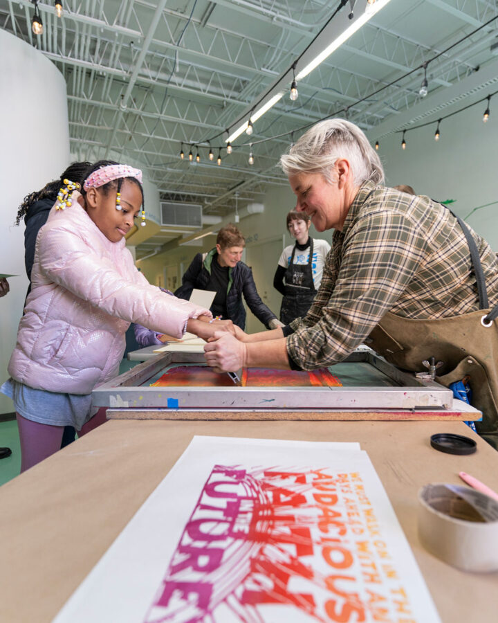

MLK Day 2026: Chaos or Community?
Hyde Park Art Center proudly presents a free public Martin Luther King Jr. Day celebration MLK DAY 2026: CHAOS OR COMMUNITY on Monday, January 19, from 11 AM – 4 PM at 5020 South Cornell Avenue. Eclectic programming for all ages blends live music, thought-provoking film, artmaking, and meditation, to highlight art as a vessel for collective memory, liberation, and joy, while reflecting on Dr. King’s profound impact on social justice and cultural movements. Registration is recommended.
Event Highlights:
11:00 – 11:30 AM | Meditation + Opening CeremonyCamille Smith facilitates a grounding session of breath and stillness to open the day. This collective meditation honors rest as resistance and sets the tone for a day of reflection and renewal.
11:30 AM – 2:00 PM | Community Artmaking Activities
Malika Jackson leads a screen-printing session from 12:00 – 2:00 PM, for participants to print and take home a limited-edition design by Jackson celebrating unity, resilience, and collective creativity. From 11:30 AM – 2:00 PM, Rhonda Wheatley collaborates with community members to create “Ephemeral Mural,” a large-scale, mixed-media mural using recycled and found materials, and Veronica Casado Hernández leads a collage portrait workshop “Radical Dreams: The Collage of Us” for families and young artists to create portraits of friends, family, or pets using colorful, playful materials, in celebration of individuality, joy, and belonging.
12:00 – 12:30 PM | Exhibition Tour: Mutuality
The 2025 Center Program cohort of artists leads a guided tour of their exhibition Mutuality, exploring care, reciprocity, and interconnection in artistic practice.
1:00 – 1:45 PM | Performance by Amari AmaiI Heard The Voice is a performance in honor of King’s distinct poetic voice that swelled the calmest streams and quelled the most ferocious despair. Using storytelling, dance, hymns, soundscapes and projection, Amai will take the audience on a journey through the 1968 West Side riots following King’s assassination in hopes of landing on sweeter mountaintops of collective healing, release, and renewed joy